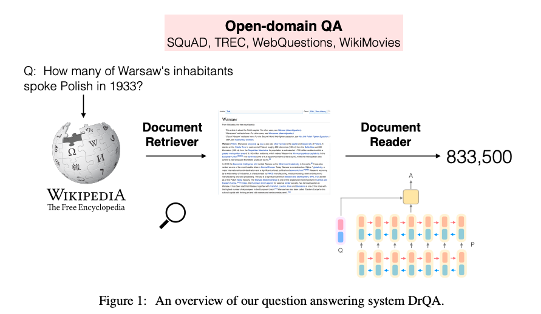

论文：Reading Wikipedia to Answer Open-Domain Questions
本论文提出了基于Wikipedia构建的开放域问答系统。该系统分成两个部分组成：Document Retriever和Document Reader。Retriever采用结合bigram hashing和TF-IDF加权的词袋模型的方式表示问题，然后使用这个表示来召回最相关的5篇文章。Reader 则参照AttentiveReader(Hermann et al., 2015;Chen et al., 2016)，通过理解问题以及前面获得的5篇文章中的各个段落，从段落中提取出与问题最相关的文本片段，最后把这些片段组成最终的问题答案。
工作流程如下图所示：

接下来详细说明该系统中各个组件的具体实现。
Document Retriever
利用一个简单的倒排表，找出与问题可能相关的文档；然后使用TF-IDF加权的bigram词集模型分别表示文档和问题(这里使用了feature hashing 技术)，从而计算出它们的相关性，返回与问题相关性最强的5篇Wikipedia文档。把这些文档输入给Document Reader。
Document Reader
给定一个问题q，包含l个token ，由n个段落组成的文档，每个段落由m个token组成称。
段落编码
把段落中每个token表示称特征向量，然后逐个把它们输入到RNN中，从而得到：
在这里表示编码了的上下文信息。在Reader组件的实际实现中，使用了多层BiLSTM来对段落各个token进行编码，最后把每层的BiLSTM的隐藏状态拼接起来作为最终的。
向量由以下几个部分组成：
词向量: 。这里使用300维的GloVe词向量(glove.840B.300d)。在DrQA系统中，把大部分的词向量fixed，只针对1000个出现频率最高的问题单词对应的词向量进行fine-tune。因为对于what,how,which,many这些词语对于文档系统来说非常的重要。
Exact match: 。这里使用3个二元特征来表示是否包含在问题q中(在这里需要先对各个token进行预处理如：词干提取/词形还原/小写形式，然后再基于预处理后的和q，判断是否包含在q中)。实验证明，此特征对结果产生很大的作用。
Token features:。这部分特征分别由的POS，NER标签和标准化的token频率(TF)组成。
Aligned question embedding:，此处的表示与q中各个token的对齐分数。
其中 表示带有ReLU函数的全链接层。与exact match，这相当于提供一个软对齐特征。
参考Learning Recurrent Span Representations for Extractive Question Answering。
问题编码
问题编码非常简单，只采用了词向量特征作为RNN网络的输入，从而得到的RNN输出为，把所有的输出，通过加权组合成一个向量，即。具体计算为，表示q中的重要度：
上式中的w向量为学习参数。
预测阶段
输入段落向量，以及问题向量，独立训练两个分类器分别预测答案片段的起始位置和结束位置。简而言之，就是使用一个双线性函数来获取与的相似度以及计算中作为起始位置和结束位置的概率分别是多少:
在预测阶段，令 i为片段的起始位置，为片段的结束位置， 如果该片段的起始位置和结束位置满足条件和最大，那么该片段为最佳片段。为了能够在所有段落中进行比较，我们用指数形式替换掉归一化的Softmax。
数据集
实验采用了三种数据集：1. Wikipedia作为寻找答案的知识源；2. SQuAD用于训练Document reader；3. 其它三个QA数据集(CuratedTREC,WebQuestions and WikiMovies)用于测试整个系统开放领域的QA能力，并且评估模型在多任务和远程监督中学习的能力。
Wikipedia
只提取纯文本，去除所有结构化的数据，如图表。最终保留了500w+篇文章，包含900w+个token 类型。
SQuAD
基于Wikipedia的机器阅读理解数据集。87K个用于训练的样本，10k用于验证，测试集只能通过SQuAD creator进行访问。每个例子都是从Wikipedia的文章中提取的段落和一个人为提出的相关问题。答案就是段落中的一个片段。如果模型预测出来的答案片段与给定的答案片段匹配，就会得到一个信任分数。这里使用两个评估指标：精确字符串匹配(Exact string Match)和F1分数。
在这里的single model中，使用SQuAD来训练和评估Document reader。
远程监督数据
CuratedTREC,WebQuestions和WikiMovies数据集只包含问答对，不像SQuAD那样含有相关文档或段落，因此不能直接拿来训练Document Reader。基于distant supervision(DS)for reflation extraction(Mintz et al.,2009)这篇论文的工作，使用一个程序自动为每个数据样本关联相关段落，然后将这些样本加入到训练集中。这个处理程序的工作流程如下：
- 首先使用Document Retriver根据当前样本对应的问题搜索出top 5Wikipedia文章。
- 如果某篇文章中的所有段落都没有包含与现有的答案精确匹配的片段，那么该文章被剔除。
- 如果段落的字符数小于25或大于1500的话，那么剔除该段落。
- 如果段落中不包含任何出现在问题中的命名实体，那么剔除该段落。
- 对于剩余段落，使用20token长度的滑窗，使用unigram和bigram的方式与答案进行匹配，根据匹配结果对每个重叠位置进行打分。最后，保留重叠度最高的5个段落。如果所有的段落与答案的重叠度全部为0。那么剔除这个样本(不录入训练集中)。
对以上三种开放域QA数据集的处理后，最终的结果如下图所示：
对于处理后，分别从这些数据集中获取的可用于远程监督训练数据集规模统计如下：
实验
先对2个组件分开进行测试，然后再将二者结合起来进行测试。
Retriever评估
通过对比Wikipedia搜索引擎和Document Retriever(两种实现方案)对论文中使用的4个数据集进行相关性搜索。对比结果如下所示：
Reader评估
本论文主要是在SQuAD数据集上评估Document Reader组件。
Reader模型实现细节
使用3层BiLSTM网络叠加，隐藏状态维度为128。使用CoreNLP工具包来处理分词、词干提取、词性标注和命名实体识别。最后，对所有训练样本按照段落长度进行排序，mini-batch为32，Adamax优化器，dropout rate为0.3。
实验结果与分析
特别地，关于各个特征对实验结果的影响如下所示：
DrQA整体评估
比较以下三个版本的DrQA，评估使用远程监督和多任务学习对Document Reader的性能影响(Retriever部分保持不变)：
- SQuAD：single model，仅使用SQuAD训练集进行训练
- Fine-tune(DS):先使用SQuAD预训练Reader模型，然后通过远程监督的方式，使用其它三个数据集分别进行fine-tune。
- Multitask(DS):使用SQuAD和所有DS数据集进行训练。
实验对比结果如下所示：